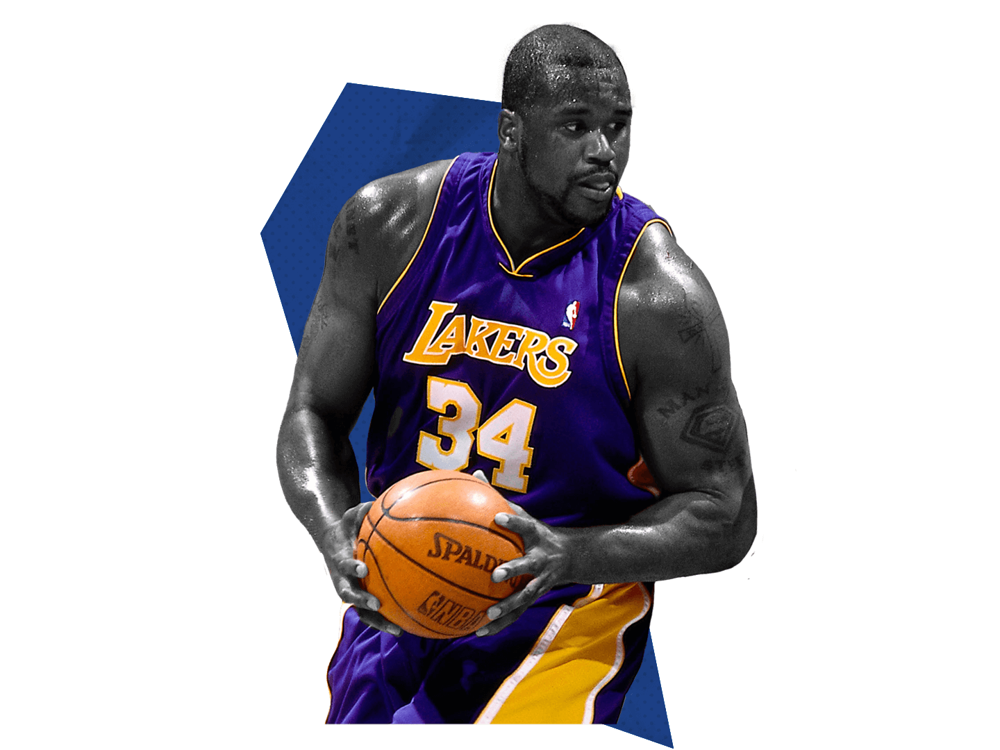

The center (C), or the centre, also known as the five, is one of the five positions in a basketball game. The center is normally the tallest player on the team, and often has a great deal of strength and body mass as well. In the NBA, the center is around 7 feet (2.13 m) tall. They traditionally have played close to the basket in the low post.
Centers are valued for their ability to protect their own goal from high-percentage close attempts on defense, while scoring and rebounding with high efficiency on offense. In the 1950s and 1960s, George Mikan and Bill Russell were centerpieces of championship dynasties and defined early prototypical centers. With the addition of a three-point field goal for the 1979–80 season, however, NBA basketball gradually became more perimeter-oriented and saw the importance of the center position diminished.
The centers have seen a resurgence in their importance in later years. The most recent center to win an NBA Most Valuable Player Award was Nikola Jokić following the 2020–21 season.
The low-post functions of the center position continued to dwindle in the 2010s as the NBA embraced small ball and a more perimeter-oriented style of play. While there are still a few centers that play a more traditional style, some centers begin to adapt to the outside game.
The Miami Heat, for example, featured a "positionless" lineup as coined by head coach Erik Spoelstra, with power forwards Chris Bosh and Udonis Haslem shifting between center and power forward depending on matchups. The Heat won two NBA championships in 2012 and 2013 using this unconventional lineup.
The rise of the stretch five paved the way for centers to add outside shooting to their arsenal. While they continue to roam the paint at times, they have also expanded their game to the perimeter with their three-point shots.
Some notable centers include: